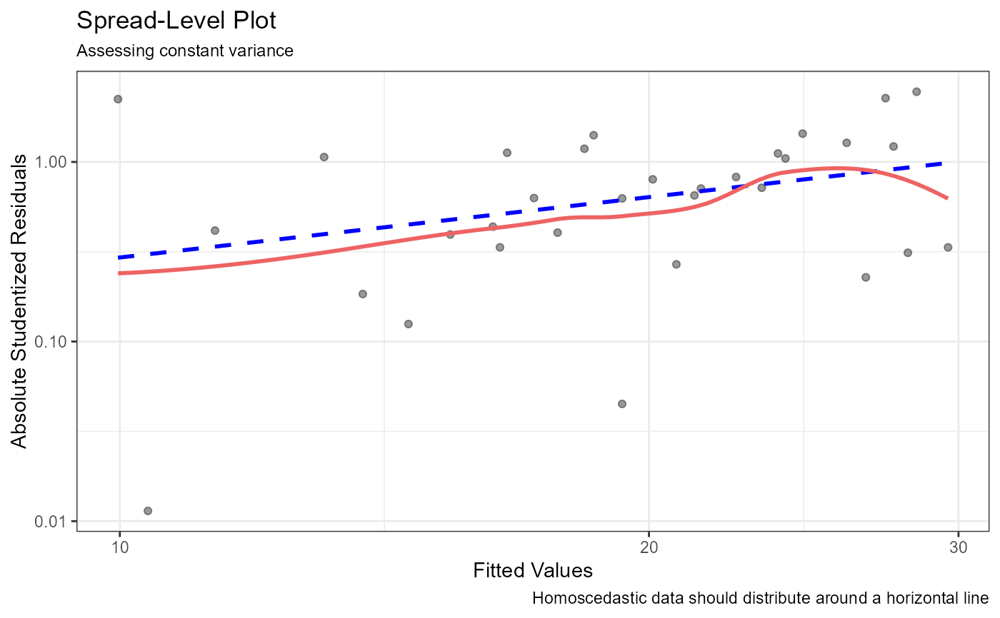

spread_plot.RdCreates a plot for examining the possible dependence of spread on level using the studentized residuals from a linear model.
spread_plot(x, alpha = 0.4, n.labels = 0, span = 0.75)
| x | an object of class |
|---|---|
| alpha | numeric; degree of transparency for points (0 to 1, default=0.4). |
| n.labels | integer; the number of largest residuals to label (default=0). |
| span | numeric; smoothing parameter for loess fit line (default=0.75) |
a ggplot2 graph
This function is a modification of the spreadLevelPlot function
in the car package, using ggplot2 rather than
base graphics.
The graph plots the fitted values against the absolute studentized residuals on logarithmic scales. A robust linear fit line and a loess fit line are also plotted.
